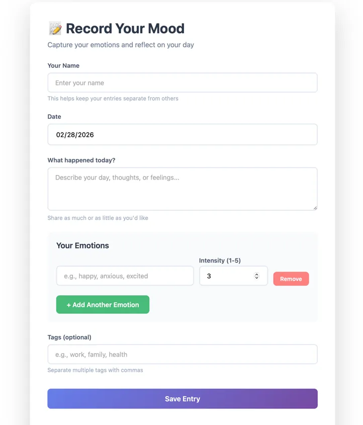

Input
Separate text, emotion names, and intensity before visualization.
The record form keeps emotional description human and open-ended, while emotion names and intensity values are entered separately so the system can calculate patterns without flattening the diary entry.
